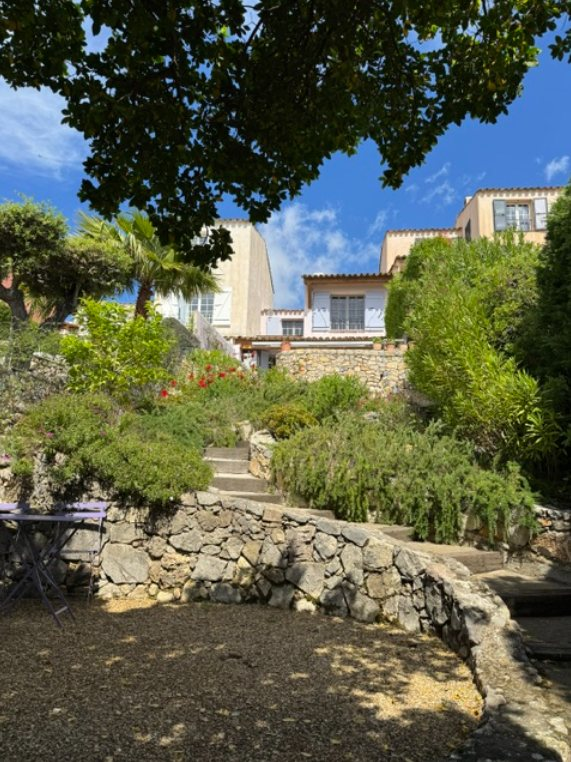
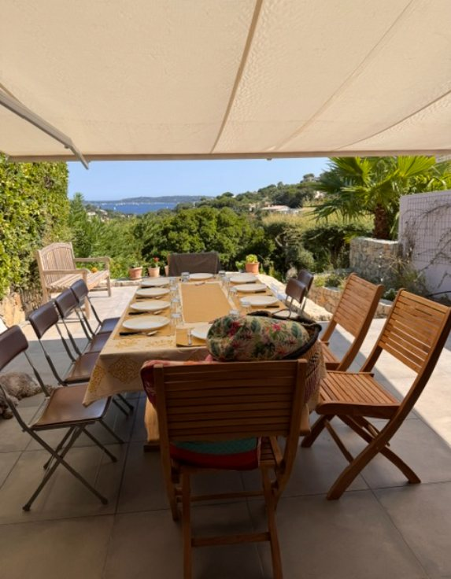
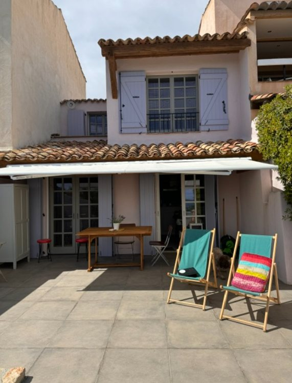

Jardin et domaine
L’extérieur
Une terrasse à vivre, ombragée par un store et dotée d’une grande table à rallonge, est idéale pour les repas et les apéritifs en plein air face à la mer. Elle s’ouvre sur un jardin privatif ombragé de 298 m², entièrement clos et doté d’un arrosage automatique, avec de nombreux coins de fraîcheur en plein été. Des bains de soleil avec coussins sont à votre disposition, et l’abri de jardin contient des chaises, 5 chiliennes et 2 transats supplémentaires ainsi qu’un parasol de plage. Un espace est prévu dans le jardin pour ranger vos vélos électriques en toute sécurité.

Jardin méditerranéen ombragé, idéal en plein été

Terrasse ombragée et table à rallonge, vue imprenable

Terrasse et façade du Mas 64, avec transats
Le Domaine
Résidence sécurisée avec régisseur sur place. Piscine avec espace détente, 3 courts de tennis avec vue sur la mer, terrain de pétanque, aire de jeux pour enfants et club-house avec restaurant (cuisine traditionnelle, pizzas maison, pain frais et viennoiseries sur commande). De jolies promenades sous les arbres partent directement du Domaine.